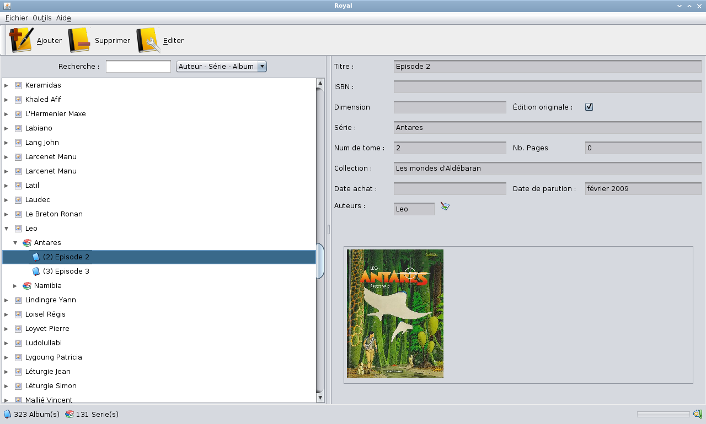

This wizard presents the album list and a lot of information linked to the album of the local database, sorted by the selected criterion.

The possibles views are :
Is this wizard it's possible to :